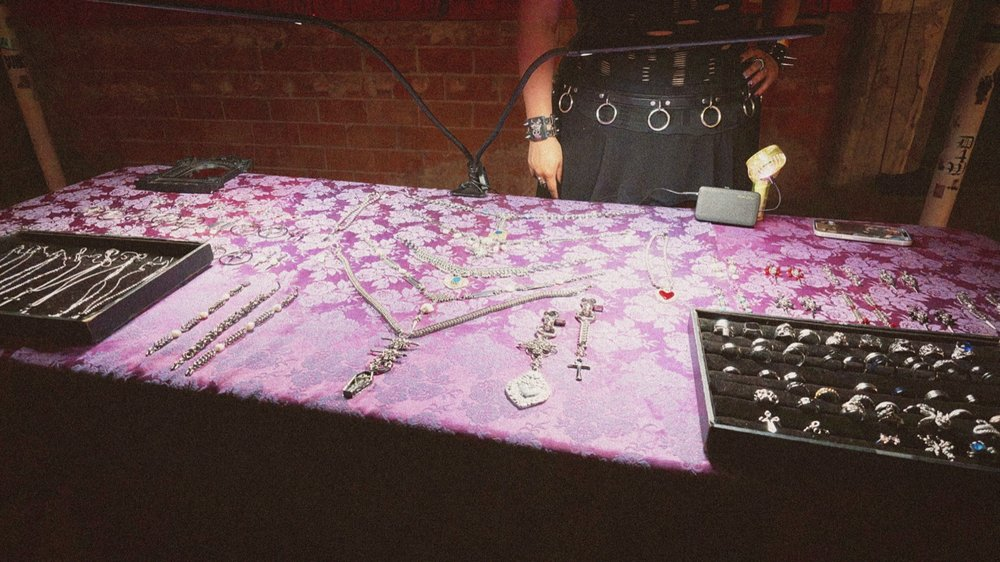
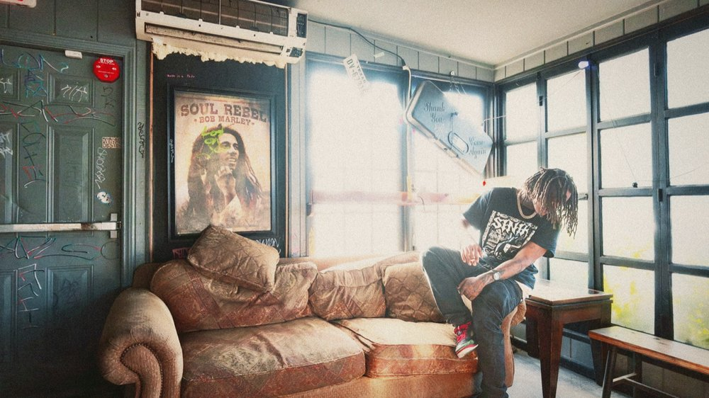
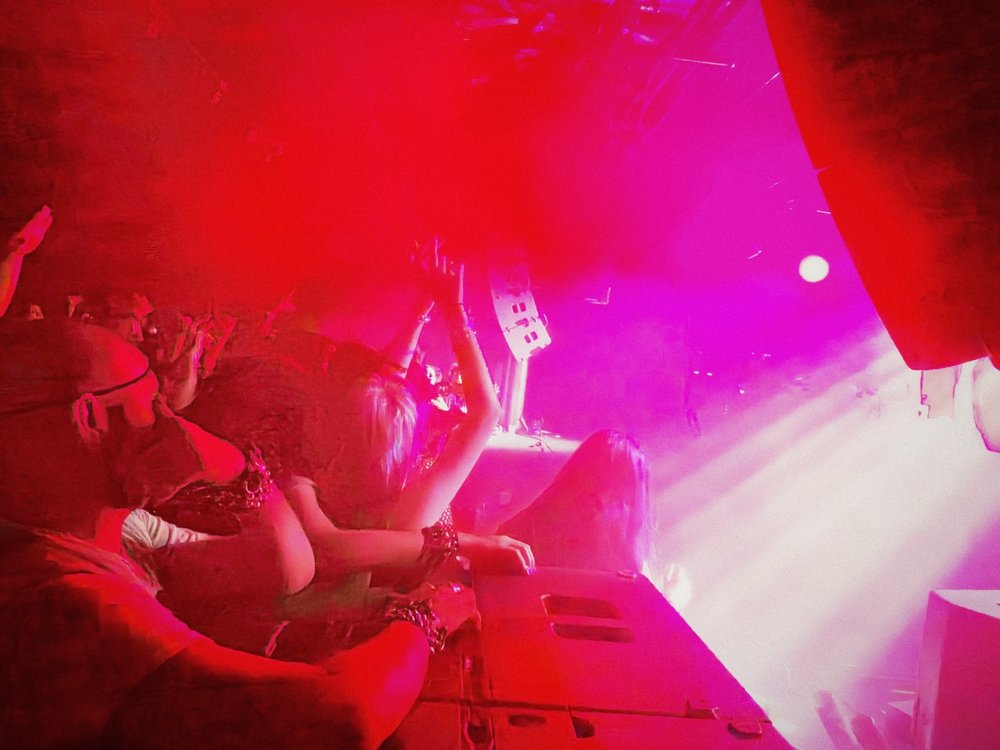
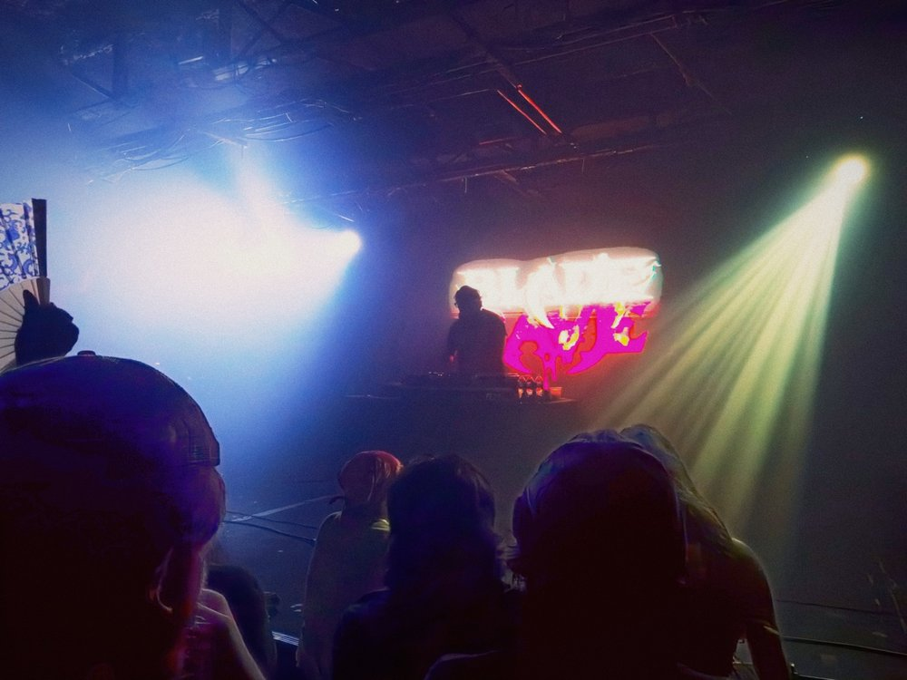
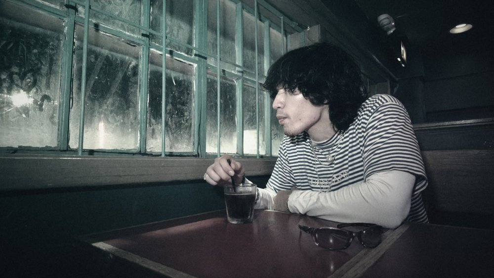
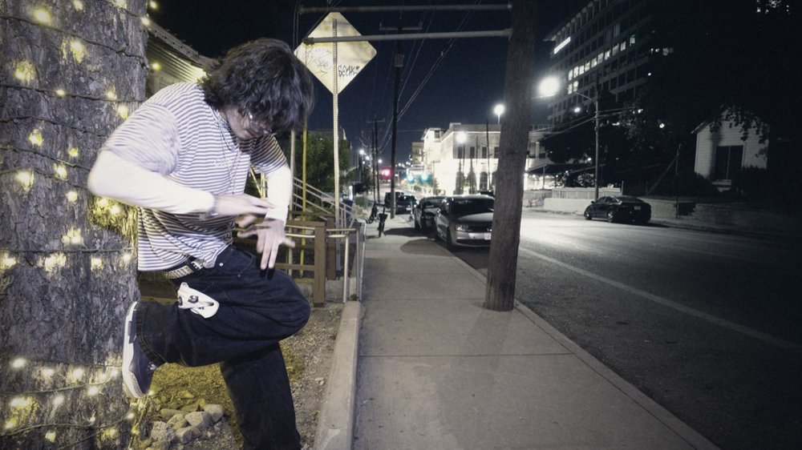

One person. One night. Three acts. You set the rule, and we find out together whether it held.
You pick what the night is about · You see it before anyone
Anything you want out is out, no reason needed
01
The Idea
Most photographs of a night out are a record of what happened. There is nothing to
measure them against, so they are just output. Thirty thousand people shoot the same
street on the same Friday and none of it means anything, because nobody wrote down
first what the night was supposed to be.
You say what the night is at eight. At three we find out if it held.
That is the whole piece. A control at the front, in your words, on the record, and an
answer at the back, in your words. It is not a story about how you looked at the
beginning and how you looked at the end. Everybody already knows what happens to a
face by 3am, and that is a photograph anyone can take.
So the thing that repeats across the three acts is not your face. It is one line from
you per act, written or said in the moment, and they run on the page in the biggest
type on it. The pictures carry the night. The lines carry the argument.
02
The Rule
You pick it, not us
Before anything is shot, you name one rule for the night. Not a theme, not a look,
not an outfit. A rule, because a rule is something you can actually break.
The only brief you get
pick one rule for tonight.
something you could actually break, so at the end we know if it held.
A look can be photographed off your body, which means the camera decides whether it
survived and you had nothing to do with it. A rule can only be kept or broken by you.
That is the difference, and it is why the last act is yours to answer instead of ours
to shoot.
What we do with it
It becomes the title of the piece. It sets the colour of the type on the page. It
decides which rooms we bother going into. Everything the house brings is built around
the thing you named, which means it changes completely from one subject to the next.
That is the point of the format.
If you don't have one
Fine. We shoot the night and you name it afterwards, and the piece runs without a
rule. It is a weaker piece and we will say so, but a rule you invented to be polite is
worse than none, and nobody has to perform a concept they don't believe.
03
Three Acts
All frames below are ours
Three acts, because a night has three completely different lighting problems in it and
pretending otherwise is how these pieces end up looking like everyone else's. Every
photograph on this page is from the house archive. It is what the register already
looks like, not a mood board of other people's work.
ACT 1Getting ReadyWarm, controlled, one room

The decision, before it is worn

The room, still quietEveryone arrives, the room fills
What the act is for
The decision, on the record, before the first drink. Not who you are. What you decided.
The turn
The moment choosing becomes committing. Three things on the bed, you take the second one, the other two go back.
It only counts if
You say the rule out loud, once, and it gets written down with a time on it. If the act does not produce that line, the act did not happen no matter how many frames came out of it.
What we never shoot
Anything wide enough to identify your building, your street or your door.
ACT 2Going OutGel, crowd, no control at all

One colour owning the whole frameFound light, nothing added

The room as weatherOutside is where the piece lives
What the act is for
The pressure test. What the rule costs you to keep once the night is actually running.
The turn
The first time the night pushes back, and you either adjust or you hold.
It only counts if
There is at least one frame where the rule is visibly under strain and you are still running it. Twenty good group photographs are not this act.
The trap
This act hands back the most frames and the fewest that are about anything. It gets cut hardest.
ACT 33AMFluorescent, flat, nobody art directed it

The counter, the brightest light of the nightAfter everyone stops performing

The walk, nobody else in it
What the act is for
The answer. You say whether the thing you named at eight is still true, and that is the end of the piece.
Why it is not sad
The cliche version of 3am is a tired face under bad light and a slow song. We do not grade this act to be pretty and we do not grade it to be bleak. It is the least treated thing in the piece on purpose, because the rule has to survive a room nobody styled.
It only counts if
Your answer is yours. If you are done, the act runs with no line and the piece ends on two. That is a normal outcome, not a failure.
04
The Register
How it is shot
The look is hot and saturated, the grit is grain rather than photocopy, and the black
graphic furniture goes on top of the photograph instead of into it. Messy on purpose.
A little unclean beats polished, every time.
Wide, and close
Standing inside the thing rather than watching it from across the street.
The one real lesson from the found-footage party film everybody cites: it was shot on a professional cinema camera chosen for how it survives sudden light changes, then made to look amateur on top. The roughness is engineered. It is not what happens when you stop trying.
Whoever holds the camera is in the story
The camera gets passed around. Frames shot by you or your friends are credited to you or your friends, by name, on the page.
Not a gimmick. It is a field in the file, so a frame you shot is a frame you own and can pull on your word alone.
One colour owns one scene
Instead of correcting a room back to neutral, we let a single found colour take the whole frame and hold it for a long beat.
Sciamma's Girlhood does this better than anything: four girls in one blue room, performing for each other and not for the camera, no escalation and no consequence waiting at the end.
Your eye line, never above or below
Nothing shot up at you and nothing shot down at you. It is in the paperwork, not just the plan.
A hard light on the lens axis
Direct flash, when it is used, is a declaration rather than a style. It separates one person from a crowd and it admits out loud that somebody was standing there with a camera.
It is also the only light that works in all three acts, which is the practical half of the argument.
Your words are the biggest thing on the page
Three lines, one per act, set larger than anything else. The photographs are the evidence. The lines are the piece.
05
The Shelf
What we studied, and what to take
Named so they can be looked up rather than reproduced here. The two marked
load bearing are the ones that actually change how this
gets shot. The rest are corrections to it.
The spine · words as the picture
Signs that say what you want them to say and not signs that say what someone else wants you to say
Gillian Wearing · 1992-93 · Tate
Strangers on the street photographed holding a card with their own sentence on it, in their own handwriting. The sentence is never the one you would have guessed from the face.
What to takeThe consent structure is the picture. They wrote it, they are holding it, the photograph cannot argue with it. That is exactly what three lines per act are doing here.
Truisms
Jenny Holzer · from 1977
Flat declarative sentences set enormous, in public, with no author attached and no image to explain them.
What to takeA sentence set big enough stops being a caption and becomes the object. Set the line larger than feels reasonable and give it nothing to lean on.
Act 1 · one room, before
The Ballad of Sexual Dependency
Nan Goldin · 1986 · MoMA
Bedrooms, bathrooms and mirrors shot from inside the friendship rather than from the door. Snapshot flash, no distance, nobody tidied up first.
What to takeDo not tidy the room. The clutter dates it, places it, and tells you what the person actually lives in. Take the frame where the mess is.
Nighthawks
Edward Hopper · 1942 · Art Institute of Chicago
A lit interior at night seen as a box of light, with the darkness around it doing all the composing.
What to takeFrame a lit room from the dark and let the window edges crop it. Works for a doorway at 8pm exactly as well as it works at 3am.
Act 2 · the room, the street, the crowd
Girlhood (Bande de filles)
Céline Sciamma · 2014
Young women together, held long, inside one saturated colour, performing for each other and not for the lens. No escalation structure, no consequence waiting at the end.
What to takeFind the one place on the block that is already a single strong colour and hold there far longer than feels comfortable. Let them stop noticing the camera.
Café Lehmitz
Anders Petersen · 1967-70
One bar, three years, everybody at eye level and nobody made small.
What to takeThe access is the technique, and on a single night you do not have it. So shoot the group as the unit and yourself as the edge, honestly, instead of faking intimacy you have not earned.
Chelsea Reach / Looking for Love
Tom Wood · 1980s
Years inside one venue, and not one person in it is ever the joke of the frame.
What to takeOne rule only, and it is absolute: nobody is the joke. If a frame is funny at somebody's expense it does not run.
Les Glaneurs et la Glaneuse
Agnès Varda · 1999
The person holding the camera is audibly a character in the film. Her hand is in frame, her voice is in it, she is not pretending to be furniture.
What to takeStop hiding the operator. A hand on the rig, a reflection in a shop window, a voice asking the question. It is more honest and it is more interesting.
Act 3 · after
Grim Street
Mark Cohen · from the 1970s
Flash fired close, from the hip, into gestures and fragments. Hands, legs, the back of a coat. Faces often not in it at all.
What to takeThe fragment is a whole picture. Heels being carried, hands on a table, a to-go bag. Half of act 3 is shot below the shoulders.
News From Home
Chantal Akerman · 1977
A voice reads over long static shots of a city, and the voice never appears on screen.
What to takeThe last line does not need a talking head. Her voice over an empty street is stronger than her face saying it.
Anti references · what every phone on the street will make that night
The escalation party film
The reference everybody reaches for first
Its engine is a written ending: things get worse, then there is a consequence. That is fiction, and it needs a script to pay off. A real night has no third act unless somebody agreed to one.
What to take insteadKeep the wide lens and the operator as a character. Leave the escalation, the colour and the way that camera treats the women in it.
The tired girl under bad light
The default 3am photograph
Smeared liner, a slow song, a grade pushed cold and a caption about the comedown. It is the most produced image on the internet and it is somebody being looked at rather than heard.
What to take insteadUndergrade it, put the words in her mouth, and end on what she says rather than on how she looks.
06
Three Questions
One per act, camera down
Not an interview. Three questions across eight hours, each one answerable in a sentence
while you are doing something else. They get typed out, read back to you once, and you
can change them or kill them.
What do you have to get right to sound like them?
Act 1 · after the outfit is decided, before anyone arrives
Never in the first twenty minutes, when a stranger with a camera is still a stranger with a camera and everything said is management. If it dies: give me one you got wrong.
You don't post. What does that get you?
Act 2 · outside, between two rooms, friends within earshot
Outside because it is the only place quiet enough to record, standing still, and nothing is being asked of anyone alone. If it dies: when's the last time you almost did?
What's something you wrote that you kept?
Act 3 · the quietest place left, after the food lands
This one gets skipped entirely if the answer to "you good with this one?" is anything less than a clear yes. A two line piece is fine. If it dies: what would you never let somebody else write for you?
Follow-ups repeat your own word back as a question and ask for the example, never the
meaning. No menus, no finishing your sentence, no reacting on the microphone. If a
question comes out leading it gets named as leading and asked again straight.
07
The Paper
Read before anything is shot
This part is not fine print and it is not a formality. It is most of why the format
works, and all of it is agreed before the first frame.
You see it before anybody else does.Every frame, graded, and the cut. Before it is anywhere.
Anything you want out is out.No reason required, no negotiation, no asking twice.
Yes twice.Once before, once after you have seen the edit, on a different day and sober. It publishes when you say yes, and if that never comes it never runs.
After the first drink you can take things away, you cannot add them.If you want to widen it, that waits for the morning.
Your friends get asked by you, days ahead, in writing.A stranger asking in front of you is the least free room there is. Anyone who has not answered is out of every frame.
Two of three, never all three.The time, the room and a face you can recognise. The piece publishes at most two. The venue stays out of the page.
The microphone is yours to switch off.It records to itself, so it does not stop when the camera does. You are told exactly how it comes off, and it comes off whenever you want.
Nothing shot up at you or down at you.Your eye line, all night.
What we cannot promise.The site is built in the open, so a file that gets pulled stays in the code history until that history is rewritten. It comes off the page immediately. It does not evaporate. Anybody who tells you otherwise is guessing.
ALL NIGHT · the cover story · 0FF THE PRINT
Every frame on this page is ours. Everything on the shelf is named so it can be looked up, never reproduced here.
Pitch the desk: offtheprintcollective@gmail.com ·
@vamppsych